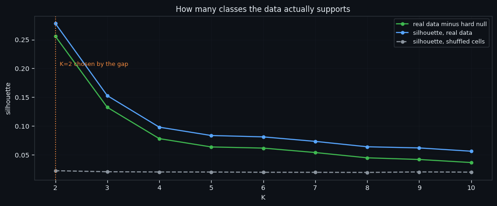
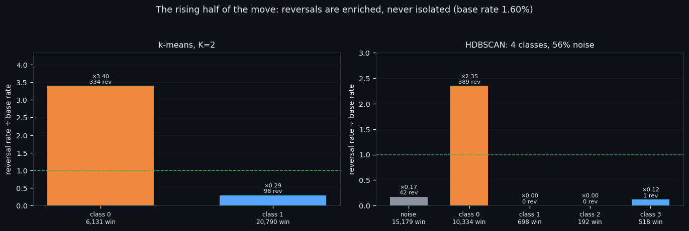
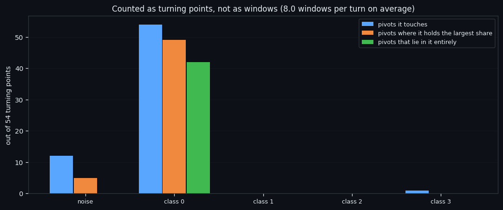
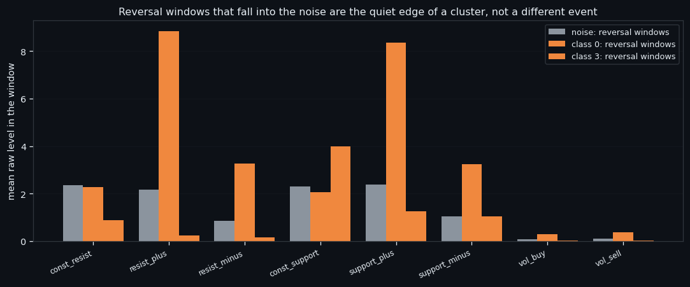

The Rising Half of a Move: What the Order Book Looks Like Between a Bottom and a Top
In shortHalf of every price move is a climb from a bottom to a top. We took only that half — 26,921 windows of the order book — and clustered it blind. The structure that comes out is the same one the whole dataset gives, which is good news: it means the classes are not an artefact of mixing rises and falls together.
Narrated walkthrough · plays from YouTube when you press play.
① Cutting the data by the geometry of the move
The zigzag with a 2.3% threshold cuts the price into legs: every leg runs from one turning point to the next. Take only the rising half — the turn itself (±15 minutes around the pivot) plus the whole leg that follows it — and cluster only those windows, with the feature scale recomputed on this subset so that nothing from outside leaks in.
| the set | value |
|---|---|
| windows of 210 s | 26,921 |
| reversal windows in them | 432 (1.60%) |
| legs of the zigzag in the dataset | 120, average 33.9 h |
One objection has to be said out loud before any number: the zigzag knows the future. A leg is only a leg once the next turn has happened. So a class found inside one half of a move is not, by itself, something a live bot can use — it first has to know which half it is in. We measure that separately, and the answer is that the book barely knows.
Everything in this series feeds one goal: an automated trading bot that reads the order book instead of the price. Which is why this study is a measurement, not a strategy: it tells us how much of the structure we see is really about the direction of the move.

② The same axis, restricted to one half
Same result as on the whole dataset, and that is the point of running it: the split does not change when we restrict it to one half of the move.
| split | classes | the reversal-rich one | reversals in it | versus base |
|---|---|---|---|---|
| k-means | K=2 | 6,131 windows (23%) | 334 | ×3.40 |
| HDBSCAN | 4 + noise | 10,334 windows | 389 | ×2.35 |
The quiet classes hold almost no reversals at all, the noise holds 42 of them at ×0.17. Stability is 0.795 against 0.146 for the hard null.
Everything in this series feeds one goal: an automated trading bot that reads the order book instead of the price. A filter that works the same way in both halves of a move is a filter that does not need to know the direction — which is the only kind we can put in a bot.

③ Counted as turning points, not as windows
Counting reversal windows is misleading on its own. Windows step every 210 seconds, so up to nine of them fit into the ±15-minute band around a single pivot: one cluster of windows easily looks like nine separate events. So everything gets recounted per turning point, with the metric being the share of a turn's windows that a class holds — 1.0 if the turn lies in it entirely, 0.03 if it holds one window out of thirty.
| windows | turning points touched | where it holds the largest share | turns lying in it entirely | |
|---|---|---|---|---|
| noise | 42 | 12 | 5 | 0 |
| class 0 | 389 | 54 | 49 | 42 |
| class 1 | 0 | 0 | 0 | 0 |
| class 2 | 0 | 0 | 0 | 0 |
| class 3 | 1 | 1 | 0 | 0 |
432 reversal windows belong to 54 distinct turns — 8.0 windows per turn. The noise holds an average share of 0.092 of a turn.
Everything in this series feeds one goal: an automated trading bot that reads the order book instead of the price. For a bot this is the difference between "we catch 200 signals" and "we catch 30 events, several times each" — and only the second number is real.

④ The reversals that fall into the noise
Some reversal windows fall into the noise — 42 of them from 12 different turns. Are those special reversals the clustering failed to see?
No. They are the quiet edge of the same event:
| where the reversal window sits | resist_plus level |
|---|---|
| in the reversal-rich class | 8.84 |
| in the noise | 2.17 |
| ordinary windows of the noise | 1.60 |
A turn lasts long enough to produce both loud and quiet windows. The loud middle lands in the class, the quiet edges fall out into the noise — and not a single turn lies entirely in the noise, which is the check that settles it.
What is next. The mirror study: the falling half of the move, built exactly the same way. Comparing the two is where the one genuinely unexpected result of this pair shows up. Everything in this series feeds one goal: an automated trading bot that reads the order book instead of the price. And a bot that trades tops and bottoms has to know whether the book treats them the same way. It does not.

All our bots have been tested live. The best one is Line 7.
More than a dozen bots were built from this research. Line 7 — two small transformers that read 160 hours of order book as one picture — is the only one ahead of buy & hold in live trading: +5.44% since 5 Oct while BTC moved −5.29%. Every trade is in the report.
Everything on this site is research, not financial advice.
How to read this site in 5 minutes · All studies as one .md for AI · All research
← All research